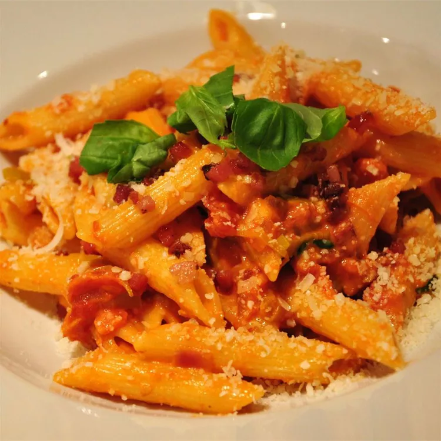

Pasta

Everything you need to make Pasta alla Vodka
- 2 tablespoons olive oil
- 2 cloves garlic, minced
- 1 can whole peeled tomatoes
- 1/2 cup chopped fresh basil
- 1/4 cup vodka
- 1 pount penne pasta
- 1 pint heavy cream
Directions:
- In a large skillet over medium heat, cook garlic in olive oil until tender,
1 to 2 minutes. Stir in tomatoes, breaking up a bit with a fork. Stir in basil,
salt, and pepper and simmer 15 minutes. Stir in vodka and
cook 15 minutes more.
-
Meanwhile, bring a large pot of lightly salted water to a boil.
Add pasta and cook for 8 to 10 minutes or until al dente; drain.
- Stir cream into sauce and cook 10 minutes more. Toss with hot pasta.
Recipe from Allrecipes.com